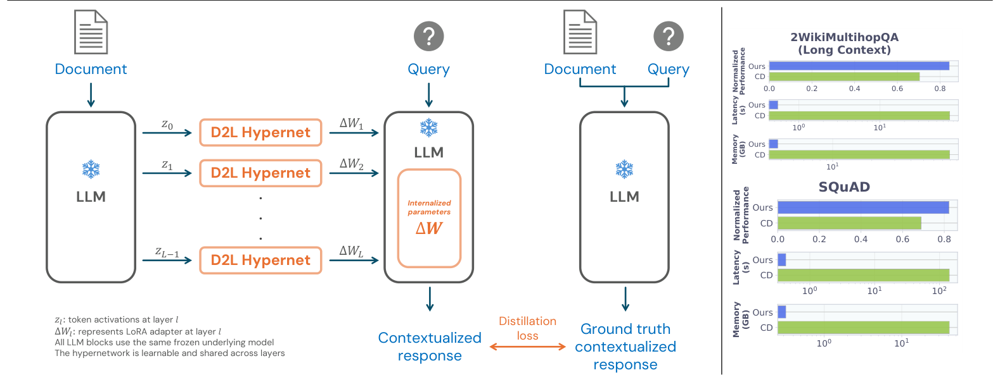
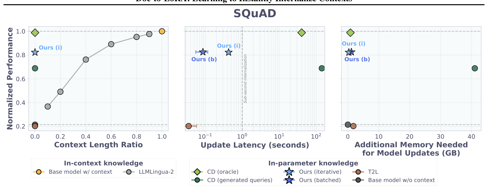
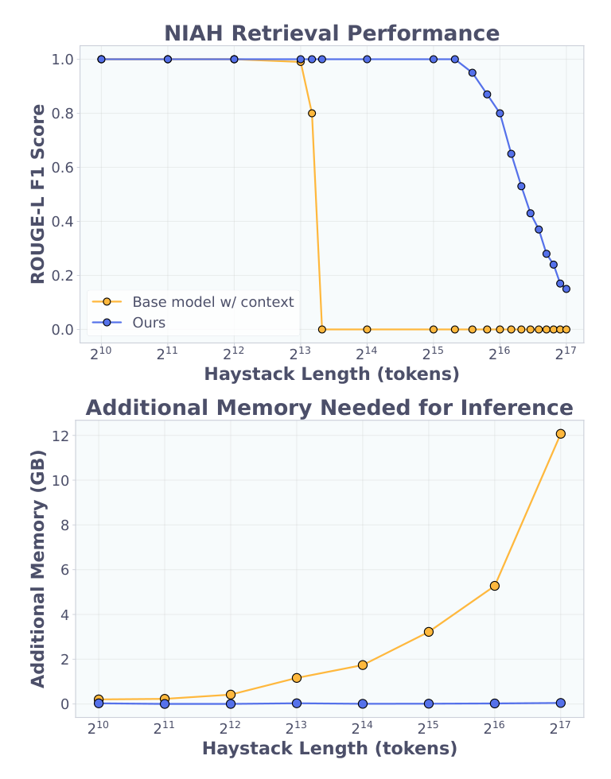
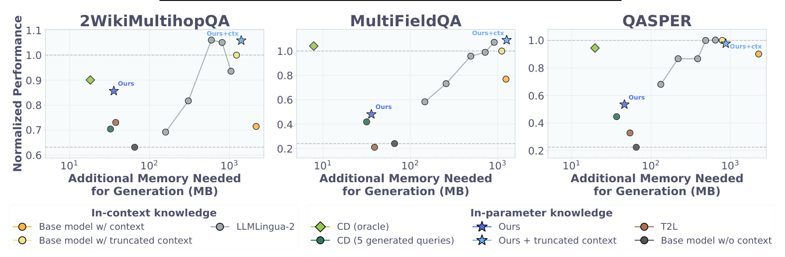
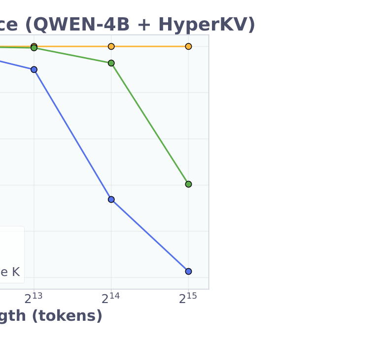

Internalization 的严格定义：从单查询蒸馏到查询无关蒸馏
ICL 的成本结构：$N$ 个上下文 token 意味着 $O(N^2)$ 注意力与 $O(N)$ 的 KV 缓存，且长上下文伴随质量退化（lost-in-the-middle、context rot）。把上下文"内化"进参数是出路，标准做法是 SFT——但需要采集数据集且易过拟合。上下文蒸馏（CD）不需要数据集：模型蒸馏自己。
式 (1)：query-dependent CD（单查询）
$$\min_{\theta_c}\ \mathbb{E}\Big[\mathrm{KL}\big(p_\theta(y \mid x, c)\ \big\|\ p_{\theta_c}(y \mid x)\big)\Big]$$$c$：上下文；$x$：查询；$y \sim p_\theta(\cdot|x,c)$：教师（带上下文的自己）采样；$\theta_c$ 从 $\theta$ 初始化。同一模型自为师生——区别只在教师看得到 $c$。
式 (2)：query-independent CD = 论文对 internalization 的定义
$$\min_{\theta_c}\ \mathbb{E}_{(x,y)\sim\mathcal{D}_c}\Big[\mathrm{KL}\big(p_\theta(y \mid x, c)\ \big\|\ p_{\theta_c}(y \mid x)\big)\Big]$$$\mathcal{D}_c=\{(x_i,y_i)\}_{i=1}^n$：针对上下文 $c$ 生成的 $n$ 个查询与教师自答（查询由另一个 LLM 生成，答案被丢弃、由目标模型自采样）。internalization ≡ 优化式 (2)：此后 $\theta_c$ 在无 $c$ 时表现得"像 $c$ 还在上下文里"。典型候选场景：需要常驻窗口的安全/对齐提示、用户偏好、长文档。
CD 的真实成本在两个被忽视的地方
普遍把 CD 的成本记在"反传"名下，论文的实测拆解更精确：对每个上下文，CD 需要先生成 $n$ 个查询（生成延迟与显存），再对 $n$ 个 $(x,y)$ 做多轮反传。后文 Table 4 的数字：100 个查询的 CD 在 SQuAD 单样本上耗时 631 秒、5-query 版在 2Wiki 上要 79 GB 显存——查询生成与批量反传是独立的两座山。
元学习 CD：把"每个上下文一次优化"变成"所有上下文共享一个映射"
式 (3)-(4)：meta-objective
$$\min_{\phi}\ \mathbb{E}_{(c,\mathcal{D}_c)\sim\mathcal{D}}\ \mathbb{E}_{(x,y)\sim\mathcal{D}_c}\ J(x,y,c),\qquad J = \mathrm{KL}\big(p_\theta(y|x,c)\ \big\|\ p_{\theta + H_\phi(c)}(y|x)\big)$$$H_\phi$：从原始字符串到 LoRA 参数的映射（超网络），$\theta_c = \theta + \Delta W_c,\ \Delta W_c = H_\phi(c)$。与式 (2) 唯一区别：不再逐上下文优化独立的 $\Delta W$，而是优化一个跨上下文泛化的 $H_\phi$。
这个转换的实质是把内层优化整个搬进外层：训练完成后，查询生成、教师采样、反传全部被 $H_\phi$ 的一次前向替代。代价是元训练本身昂贵——这批数据管线的规模值得记录：
- 语料：FineWeb-Edu 子集约 9 亿 token + PwC/SQuAD/ROPES/DROP 段落，过滤后约 320 万个唯一上下文；
- FineWeb-Edu 每篇由 gemma-3-12b-it（比目标模型大的裁判）经两轮提示生成 10 个 grounding 查询（Listing 4/5：第二轮把已生成的 QA 作为上下文示例，要求非重叠、更难、含反转推理）；QA 数据集段落自带问题；答案丢弃；
- 目标模型 gemma-2-2b-it 对每个 (context, query) 自采样一个回答，记录 top-16 token logits 作为 KL 目标；
- 合计 101,087,000 个 (context, query, response) 三元组；上下文长度均值 277 / 中位 274 / 最大 2344 token——主实验的元训练从未见过超过 2344 token 的文档（记住这个数，第 6 章要用）。
为什么"每个上下文只有 10 个查询"反而够用
单个上下文 10 个查询，分布上远不足以让 $\theta_c$ 学全"如何使用 $c$"。但元训练横跨 320 万个上下文，$H_\phi$ 看到的是 10⁸ 级的 (context, query) 联合分布——论文的假说：训练样本集体正则了 $H_\phi$，使它对"任意未来查询"的鲁棒性超过任何一个单上下文 CD 的水平。第 7 章的 Table 4 直接检验这一点：D2L（等效 10 查询/样本）逼近 100-query CD 而只花其 1/7300 的时间。这是摊销推断的标准收益结构：单任务看是欠拟合，跨任务看是正则。
架构：逐层共享的 Perceiver 超网络 + 按秩拼接的 chunking

式 (5)-(8)：逐层生成
$$W'_l = W_l + \alpha_l B_l A_l,\qquad A_l \in \mathbb{R}^{r\times d^{in}_l},\ B_l \in \mathbb{R}^{d^{out}_l \times r}$$ $$U^l = \mathrm{XAttn}\big(Q_m,\ K(Z^{l-1}),\ V(Z^{l-1})\big) \in \mathbb{R}^{r\times d_u},\qquad \Delta W_l = B_l A_l = h_\phi(Z^{l-1})$$$Z \in \mathbb{R}^{L\times N\times D}$：上下文过冻结目标 LLM 得到的逐层激活（$Z^0$ 为 embedding）；每层用同一个 $h_\phi$（跨层共享！）；$r$ 个可学习、与输入无关的 latent query 通过交叉注意力把任意长度 $N$ 压成固定 $r$ 条潜在向量，两个输出头分别映射到 $A$ 的行与 $B$ 的列。$\alpha_l$：逐层可学习标量。
三个实现细节（附录 Listing 1/2）决定了复现成败：① 超网络 = 8 个交叉注意力块、无 latent 自注意力；② 输出头是一个 EinMix 层，每个 latent 直接输出 $d_{in}+d_{out}=11520$ 维（gemma-2-2b 的 MLP down_proj：$A\in\mathbb{R}^{8\times 9216}, B\in\mathbb{R}^{2304\times 8}$），加逐层缩放参数 scaler_A/B（各 shape $1\times 26\times 8\times 1$，对应 gemma-2-2b 的 26 层）；③ LoRA 只挂在每层 MLP 的 down_proj 一个位置。超网络总计 309M 可训练参数。推理有两种模式：batched（所有层的激活打包一次前向，快）与 iterative（逐层生成，省显存）——两者数学等价，差异仅来自浮点非交换性。
式 (9)：chunking——用秩换长度
$$A_l = \begin{bmatrix} A^{(1)}_l \\ \vdots \\ A^{(K)}_l \end{bmatrix},\qquad B_l = \begin{bmatrix} B^{(1)}_l & \cdots & B^{(K)}_l \end{bmatrix}\ \Rightarrow\ B_l A_l = \sum_{k=1}^{K} B^{(k)}_l A^{(k)}_l,\quad \mathrm{rank} = r\cdot K$$$K$ 个连续 chunk 各自独立过超网络（输出形状不变），沿秩维拼接。外推能力的来源就在这里：更长的文档 = 更多的 chunk = 更高的秩，超网络本身无需改变。

NIAH：256 token 训练 → 40K token 推理的外推

- 设置：RULER 式 NIAH，"magic number" 句插入干扰文档；基座 gemma-2-2b-it（8K 窗口）。
- 训练：32–256 token、随机 1–8 chunks、64 万样本、1 epoch、lr 4e-5、单 H200 约 3 小时。
- 推理：chunk 上限 1024 token（训练最大 chunk 的 4 倍）；近满分维持到 40 chunks（40K）——chunk 数量为训练上限的 5 倍；此后平滑退化。
- 外推的两个维度同时成立：chunk 内长度 ×4（256→1024）与 chunk 数 ×5（8→40）。
NIAH 的完美数字来自一个与主方法不同的简化管线
附录 A：该实验用交叉熵（ ground-truth token 上的 NTP）而非 KL 自蒸馏，激活只取第 6 层映射到所有层，训练查询 = 评测查询。而 §9 的 Table 6 恰恰证明 NTP 目标的泛化显著弱于 KL（0.763 vs 0.819；极端泛化 0.235 vs 0.385）。NIAH 是教学性实验（论文自称 pedagogical），它的"近满分外推"不能直接为主 KL 管线背书——但它确实隔离验证了两件事：Perceiver 的长度外推与 chunking 机制本身。读摘要时需把这层归因分开。
50MB 恒定显存的含义：KV 缓存被"预付"了
基座答 128K haystack 需 12GB+ 额外显存（KV 缓存随长度线性涨）；D2L 路径下这个成本被转移到内化时刻（读文档一次、产 LoRA），回答时只剩 query 的几行 KV。这不只是省内存——它把成本从"每次问答"搬到"每次文档更新"，对"一份文档、多次问答"的负载是数量级省，对"每次问答换文档"的负载反而不划算。适用性由读写比决定，这是部署判断的第一公式。
短文 QA：82.5% 的 ICL 上界，零上下文
真实文档管线（KL 目标）下的三个阅读理解基准（SQuAD/DROP/ROPES），指标为相对"基座带截断上下文"上界的 ROUGE-L F1（绝对值：0.8692/0.4541/0.7457）：
- D2L 在 SQuAD 达 ICL 上界的 82.5%（0.814），三个基准全部优于所有 in-parameter 基线；
- 与 LLMLingua-2 对比：性能约等于把上下文压到 40%——但 D2L 之后彻底移除上下文；
- T2L（同组前作，SFT/NTP 目标训练）无法有效内化——训练分布（SFT 数据集）与任务（文档内化）错位，直接证明训练目标（CD vs NTP）是成败变量；
- 效率：亚秒内化（0.086 s，Table 4；0.2–0.55 s，Table 1），更新显存 <2GB（短文基准）；CD(oracle)——在评测查询上直接优化式 (1) 的上界基线、部署不可得——约 40 秒；CD(生成查询) >100 秒。
归一化的两面：82.5% 很体面，绝对值才是瓶颈
DROP 归一化 0.655 看似中等，但其上界绝对值仅 0.4541（F1）——离散推理（计数/排序/算术）是绝对瓶颈；这与 rank 消融中 DROP 增益最大（0.655→0.711）互证：容量上去，推理型内化才动。另一面：归一化分母是截断 ICL，本身偏松——与完整 ICL 的真实比值会更低。两个方向一起读，数字才不骗人。
长文档 QA：最好与最差的情形

测试长度远超元训练上限（2344 token）。CD 用截断文档 + 生成查询。2Wiki 上的完整对照：
| 方法（2WikiMultihopQA） | 归一化性能 ↑ | 更新显存 GB ↓ | 更新延迟 s ↓ |
|---|---|---|---|
| CD (oracle query) | 0.901 | 7.820 | 40.171 |
| D2L (batched) | 0.857 | 11.522 | 0.209 |
| D2L (iterative) | 0.844 | 3.791 | 0.551 |
| CD (25 generated queries) | 0.745 | 59.925 | 465.454 |
| CD (5 generated queries) | 0.704 | 79.371 | 72.537 |
两面的读法：2Wiki 是最好情形——D2L 逼近 oracle（0.857 vs 0.901），且比 5-query CD 高 15 个点、显存省 21 倍。MFQA/QASPER 是最差情形：D2L 只有 0.481（batched）/0.543（iterative），oracle 却有 1.041/0.945（MultiFieldQA 上 oracle 甚至超过截断 ICL 本身）——gap 达 41-56 个点（实算 41.1/56.0）。区别在哪？2Wiki 是多跳组合型问题、答案短；MFQA/QASPER 是抽取型长文档、信息密度高且分散。第 12 章 Q2 给出机制假说：chunking 的秩拼接对"分散在多 chunk、需跨 chunk 组合"的信息有结构优势（多跳），对"需要精确复述某处细节"的信息则受秩瓶颈约束（rank=LoRA 的表达预算：$r \cdot K$ 个秩位要装下整篇文档）。
一个反直觉现象："Ours + 截断上下文" 比 "Ours" 更好（2Wiki/MFQA 上）。论文假说：长上下文的注意力噪声（lost-in-the-middle）会压制 ICL；内化后的模型带着参数化知识再读原文，注意力噪声把生成"推向"参数侧，反而两种知识源互补。短文基准无此现象（无注意力噪声）。
"<2GB 更新显存"的话域：长文档上 D2L batched 反超 CD(oracle)
证据：§5.1.1 写 "Both use less than 2 GB of VRAM"——只对三个短文基准成立。Table 1/9/10：2Wiki batched 11.5GB、MFQA 19.4GB、QASPER 31.2GB，全部高于 CD(oracle) 的 7.7-7.8GB；仅 iterative 模式（3.7-4.8GB）真正省显存。推理：batched 模式要把所有层的激活同时喂给超网络，显存随文档长度增长；iterative 逐层释放。影响：引用"低显存"必须注明模式与基准。补救：以 Table 1/9/10 为准——速度选 batched（0.2s/11-31GB），显存选 iterative（0.5s/3.8-4.8GB），二者数学等价。
D2L ≈ 大预算 CD 的模拟：一次对照实验
Table 4（SQuAD 100 样本）：查询预算换性能，还是换映射？
| 方法 | 归一化性能 | 更新延迟 |
|---|---|---|
| CD (oracle) | 0.988 | 8.763 s |
| D2L | 0.866 | 0.086 s |
| CD (100 generated queries) | 0.650 | 631.101 s |
| CD (50 generated queries) | 0.601 | 311.661 s |
| CD (20 generated queries) | 0.506 | 129.044 s |
D2L 等效只见过 10 query/上下文，性能却压过 100-query CD（+0.216），时间 1/7300。论文给出两个互补解释：① 跨上下文正则——10⁸ 级 (context, query) 对让 $H_\phi$ 学到"平均意义上的 CD 算子"，比单上下文的有限查询更鲁棒；② 有偏 CD——$H_\phi$ 学到强先验"未来查询必与内化知识相关"（数据管线只生成相关查询），这个先验在分布内是免费午餐，在分布外是失效点（第 9 章知识干扰实验直接命中）。
sub-second 区间是 D2L 的"生态位"，不是全面胜利
把预算轴拉到极限：CD 用几百上千查询、几十分钟，最终会超过 D2L（论文自己承认）。D2L 的真实主张是响应性约束下的最优：交互式/设备端场景里，超过 1 秒的内化等于不可用，此时 D2L 是唯一在场的选项。一句话总结权衡：D2L = CD 的质量 × 1/7300 的时间 × 分布外风险。
极端泛化：交换查询、跨模态、替换参数化
把查询内化进参数（swapped 设定）
反向使用 D2L：内化 query、直接看文档。（recall=输出覆盖金标答案的比例；precision=输出不掺无关内容的比例。）Base w/ ctx 0.886/0.876 → D2L 0.740/0.720 → swapped 0.587/0.044（base 无上下文仅 0.185）。swapped 下模型偶尔答对但输出冗长——precision 崩、recall 存活。这说明 $H_\phi$ 学到的不是"文档专用"映射，而是更一般的"信息→参数"算子；但分布外的输出风格失控（元训练全是"简洁答案"分布）。
VLM → 纯文本 LLM：跨模态零样本
| 编码器 → 目标 | SQuAD | DROP | ROPES | Imagenette（10 类，随机 10%） |
|---|---|---|---|---|
| D2L (LLM ⇒ LLM) | 0.814 | 0.655 | 0.906 | — |
| D2L (VLM ⇒ LLM) | 0.705 | 0.568 | 0.772 | 75.03% |
用 gemma-3-4b-it 的语言塔前 26 层激活做编码器（训练只用文本），零样本给纯文本 gemma-2-2b-it 内化图像：目标模型只凭生成的 LoRA 做 10 类图像分类，75.03%。代价是文本 QA 掉 10-13 个点——编码器换模态的税。机制上这是 Perceiver 结构的红利：它对"任意来源的激活序列"一视同仁。
换成生成 KV 缓存（HyperKV）

这个失败的变体暴露了一个值得记住的机制：直接输出 key 的超网络被迫隐式模拟 RoPE 的位置依赖——而 RoPE 是长度的函数，训练只到 8 chunks，于是 8K 后崩溃；把生成 key 重新过一遍目标模型的 norm+RoPE 层，位置依赖交还给目标模型，超网络只需输出"位置无关"的内容，外推立竿见影。原则：让超网络预测与位置无关的量，位置变换留给基座——适用于一切"生成注入物"类方法（LoRA 本身位置无关，所以主方法没踩这个坑）。
消融与失败模式：四个可迁移的结论
| 消融 | 对照 | 结果 | 结论 |
|---|---|---|---|
| 训练目标（50% checkpoint） | KL vs NTP | SQuAD 0.819 vs 0.763；swapped recall 0.385 vs 0.235 | KL 匹配整个教师分布，保留不确定性与多峰；NTP 只匹配 argmax |
| LoRA 秩 | 8 vs 16 | SQuAD 0.814→0.896；DROP 0.655→0.711；ROPES 持平 | 秩是有效容量轴，性能未饱和 |
| 训练数据 | 去掉 QA 数据 | SQuAD/ROPES 反升（0.838/0.923），DROP 降 8 个点 | 对数据格式不敏感；纯预训练语料可训 |
| 知识干扰 | 无关上下文 | D2L 0.096/0.126 vs base 0.201/0.175 vs CD 0.211/0.203 | D2L 伤基座：内化无关知识后，相关查询外全部退化 |
知识干扰：D2L 比"什么都不做"更差
证据：把 SQuAD 上下文替换成"You are a useful assistant."或 4K 无关文本后，D2L 内化它们再答原问题——0.096/0.126，低于 base 的 0.201/0.175，也低于 CD 的 0.211/0.203。推理：元训练只见过"查询与内化内容相关"的分布，$H_\phi$ 把"强先验：查询必关于内化知识"烧进了权重；无关内化激活了这个先验，输出被引向不相关参数记忆。CD 没有这个先验（它只优化当前分布）。影响：持续内化多份文档（个人助理的真实负载）时，旧知识被新 adapter 覆盖、无关文档污染回答。补救：论文只有假设（加入无关查询正则）与远方引用（约束编辑、稀疏记忆微调），无实验——这是全文最大的未解决问题。
附录还给出两个工程事实：两阶段训练是必要的（直接开 chunking 不稳定：先 80K 步单 chunk，再 20K 步随机 1-8 chunk）；批量打包 4K token 序列 × 8 GPU、累计 20 万+ 上下文 token 的 batch 规模是关键（"否则过早收敛"）。整次元训练 5 天 × 8 H200。
批判评估：八条带证据的保留意见
与 oracle 的差距跨基准 4-56 个点，摘要未给边界
2Wiki gap 4.4 点、MFQA/QASPER gap 41-56 点（证据见第 6 章表格）；机制假说（多跳受益于秩拼接的加性结构 vs 抽取受秩瓶颈）见 Q2。"outperforms standard CD" 成立，但逼近 oracle 只在部分基准成立。
Mistral-7B 长上下文内部化全线失败，未解释
证据：附录 E："all internalization methods struggle … we offer no explanation"。影响：方法对骨干的适用边界（gemma/Qwen 可、Mistral 长文不可）未知；跨骨干稳健性主张要打折。补救：排查 Mistral 的激活几何（outlier 维度/attention sink）与 down_proj 位置是否是内化瓶颈。
top-16 logits 截断了教师分布
证据：元训练用 top-16 token logits 计算式 (4) 的 KL（推测动机：省显存——论文未陈述）。推理：KL 目标缺少尾部质量——对"多峰合理答案"的保留正是 KL 优于 NTP 的理由（Table 6），截断可能悄悄侵蚀这一优势；影响未量化。补救：对比 top-16 vs top-64 的元训练。
单参数化、单注入点
证据：主实验只挂 MLP down_proj、只生成 LoRA；App D 自己证明 KV/prefix 参数化可行。推理：LoRA 与 prefix 的内化容量-遗忘特性不同（Cartridges 的结论是 prefix 对 CD 很有效），无系统对比。影响："LoRA 是内化的正确载体"未被论证。
每个目标 LLM 重训一次：5 天 × 8 H200
证据：Limitations 明说需为新目标模型重训 $H_\phi$。推理：与 T2L 的"一个生成器服务多模型"路线相反，也与"利用现成检查点"的 DnD 愿景相反——D2L 的超网络绑定 (基座, 注入点) 二元组。影响：总拥有成本 = 元训练 + 每次换基座的 5 天；论文未给摊销经济学（多少文档/查询才回本）。
另见前文三条
C1（<2GB 话域）、C2（NIAH 用 CE 简化管线）、C8（知识干扰无修复实验）分别见第 6、4、9 章。三条都指向同一类问题：有利结论的适用条件藏在附录。
理论视角：D2L 学的是条件期望 $\mathbb{E}[\Delta W_{CD} \mid c]$
类比假说（非定理）：D2L 逼近 $\mathbb{E}[\Delta W_{CD} \mid c]$
D2L 的 KL 目标与 DnD（Drag-and-Drop LLMs，本仓库另一篇解读博客）的 MSE 目标在结构上同构：都是让一个条件化映射 $H_\phi(c)$ 逼近"逐样本优化"的解分布。把 CD 的解写成 $\Delta W_{CD}(c, \mathcal{Q})$（依赖上下文与查询集 $\mathcal{Q}$ 的随机性：查询采样、教师采样、SGD 轨迹）。
$$H^*(c) \;\approx\; \mathbb{E}\big[\Delta W_{CD} \mid c\big] \;=\; \underbrace{\bar\Delta W_{\mathcal{D}(c)}}_{\text{上下文均值项}} + \underbrace{\mathbb{E}[\varepsilon \mid c]}_{\text{查询/采样特异项}}$$诚实标注：条件期望等价仅在 MSE 目标下是定理；KL 的最优解是分布匹配条件，参数空间中一般不等于逐样本 CD 解的均值——上式应读作类比假说，价值在它的可检验推论：
- 正效应：CD 解的随机性（查询集、采样）被平均，条件期望落在平坦盆地，泛化优于单次 CD——可解释 Table 4 中 D2L > 100-query CD 的部分增益；检验：$\mathrm{Var}(\Delta W_{CD}\mid c)$ 越大的数据集，D2L 相对单点 CD 的增益应越大；
- 风险：若 $\mathbb{P}(\Delta W_{CD} \mid c)$ 多峰，"均值"落在流形之间——可注解第 9 章知识干扰的失效（just-so 解释，未经检验）。
与 DnD 篇（Drag-and-Drop LLMs 解读，H1"轨迹平均"）的对照检验法相同。
本仓库四篇论文构成"测试时适配"的完整设计空间
把知识放进模型有四个容器：上下文（ICL，灵活/昂贵/易失）、静态参数（LoRA/SFT，持久/慢）、生成的参数（DnD：任务→LoRA；D2L：文档→LoRA；T2L：任务描述→LoRA——都是"把适配算子元学习化"）、在线状态（δ-mem：Efficient Online Memory，本仓库另一篇解读；8×8 在线记忆矩阵）。D2L 与 DnD 的分野最值得注意：条件语义不同（文档内容 vs 任务指纹）、监督不同（CD 自蒸馏分布 vs 检查点回归）、架构不同（Perceiver 交叉注意力 vs 超卷积）。共同点：都把"每任务一次优化"摊销成"一次前向"。这个设计空间还缺一角：条件化在线状态生成器（为 δ-mem 生成初始记忆矩阵）——见 Q4。
自主科研问题：五个可动手的方向
$H_\phi$ 对文档的什么敏感：语义还是表面统计？
对同一文档做 paraphrase、句序打乱、格式重排，测生成 $\Delta W$ 的余弦相似度与下游性能变化。若表面统计主导（呼应 DnD Q1 的指纹假说），乱序文档的 adapter 应显著漂移；若语义主导，则 D2L 有资格称为"理解"。反向判据：若乱序不漂移，表面统计假说被证伪——下一步改测答案实体词汇重叠度（更细粒度的指纹成分分解）。
下手处：SQuAD 500 样本 × 4 种扰动 × 测 $\cos(\Delta W, \Delta W')$ 与 ROUGE-L 变化的相关结构；零训练成本。
chunk 秩拼接的容量-交互权衡
式 (9) 的 $K$ 个 chunk 独立生成后拼接——适配器构造层面无交叉项（$B^{(k)}A^{(j)},\ k \neq j$ 不存在），跨 chunk 融合完全委托给基座前向的非线性混合。假说：这解释了 2Wiki（多跳、chunk 间信息组合）相对好而 MFQA/QASPER（细节精确复述）差。检验：打乱 chunk 顺序，测多跳 vs 抽取型任务的性能损伤差异。
形式化：$\Delta W = \sum_k B^{(k)}A^{(k)}$ 无交叉项 $B^{(k)}A^{(j)}, k \neq j$；补一个"chunk 间轻量注意力"变体，测两型任务的增益差。
D2L 初始化 + 少步 CD：摊销经济学
论文 Limitations 自己提出该组合但未实验。定量问题：从 $H_\phi(c)$ 出发，达到 oracle−$\varepsilon$ 需要几步 SGD / 几个查询？设 $\Delta W_{D2L}$ 与 oracle 解的线性连通性成立（DnD 篇 H1 同款假设），预期 <1 step × 10 query 即可。
下手处：2Wiki 上 D2L 初始化 vs 随机初始化的 CD 收敛曲线；报告"达到 0.95×oracle"的 wall-clock 比值——这决定 D2L 是 CD 的替代品还是加速器。
跨容器生成：给 δ-mem 生成初始记忆矩阵
本仓库 δ-mem 的在线记忆需要"冷启动"：状态从零开始累积历史。把 D2L 的架构用来生成 δ-mem 的 8×8 初始状态（而非 LoRA）——"读一遍文档 → 预填记忆状态 → 在线 delta rule 接管漂移"。App D 已证明该架构可输出 KV，证明容器无关性；这是把两条测试时适配路线合流的最低成本实验。
形式化：$\min_\phi \mathbb{E}_c\ \mathrm{KL}(p_\theta(\cdot|x,c)\,\|\,p_{\theta, S_0 = G_\phi(c)}(\cdot|x))$，$S_0$ 后接 δ-mem 的门控 delta 更新。
内化即投毒：文档通道的权重后门
D2L 把任意文本映射为可执行权重——文档本身就是攻击载荷。恶意文档（含触发句式的"针"）经内化后，adapter 是否携带可被特定查询激活的后门行为？与 DnD Q5 同源，但 D2L 的攻击面更广：ICL 时代恶意上下文只影响单次推理，内化后影响所有后续查询且持久。
下手处：影子超网络 + 触发词搜索（在条件空间对 $H_\phi$ 做 PGD）；防御侧：内化前后在干净基准上的行为差作为"投毒检测器"（利用 C8 的知识干扰现象反向使用）。
小白 → 学者：十天路线图
第 1-2 天：CD 族谱
读 Askell 2021（CD 起源）→ Snell 2023 → Caccia/Cartridges 2025；复推式 (1)(2)，亲手用 gemma-2-2b-it 蒸馏一个 SQuAD 量级短文档（oracle 约 8.8 s/次，Table 4 实测），建立"oracle 基准"直觉。
第 3-4 天：超网络元学习
Perceiver 原理 + von Oswald 2020（hypernetwork 连续学习）；读 D2L Listing 1-3，理解逐层共享与 EinMix 头。
第 5-6 天：复现 NIAH 简化版
附录 A 全部公开可复现：CE 损失、第 6 层激活、64 万样本、单 H200 3 小时。跑通后再做第 4 章的两个外推维度（chunk 大小 ×4、chunk 数 ×5）。
第 7-8 天：选一个假说动手
Q1（扰动探针）或 Q3（D2L 初始化 CD）都是零/低训练成本实验，一周内可出数据。
第 9-10 天：写 proposal
从 Q1-Q5 选一个：形式化、最小实验、预期曲线、与 D2L/T2L/Cartridges 的差异表。
工作区阅读地图
"本仓库"指本博客系列工作区：RPG / δ-mem / DnD 均有配套深度解读，可对照阅读。
| 论文 | 与 D2L 的关系 | 关键对照 |
|---|---|---|
| Text-to-LoRA（同组，ICML 2025） | 前作：任务描述→LoRA | 条件粒度（描述 vs 全文档）；训练目标（NTP/SFT vs CD）——D2L 用后者证明了前者的失败原因 |
| Generative Adapter（本仓库有原文，ICLR 2025） | 最近邻：上下文→参数，单次前向 | 目标函数（NTP on ground-truth vs CD 自蒸馏）；附录 Table 12：GA 高 F1 是短输出的假象，recall 低说明事实性差 |
| DnD（本仓库有解读博客） | 同族：条件→LoRA 超网络 | 条件（任务指纹 vs 文档内容）；监督（检查点回归 vs CD 蒸馏）；架构（超卷积 vs Perceiver） |
| δ-mem（本仓库有解读博客） | 另一容器：在线状态而非参数 | Q4 的合流点：D2L 生成 δ-mem 的初始状态 |
| Cartridges（arXiv 2506.06266） | CD 的 prefix 参数化 + 睡眠时计算 | "KV 也是内化容器"；D2L App D 的对照实验 |
代码附录
A. chunked LoRA 拼接（式 9，经维度自检）
import torch
def combine_chunk_loras(A_chunks, B_chunks):
# A_chunks: K x [r, d_in]; B_chunks: K x [d_out, r]
A = torch.cat(A_chunks, dim=0) # [r*K, d_in] 式(9) 竖排
B = torch.cat(B_chunks, dim=1) # [d_out, r*K] 式(9) 横排
return B @ A # [d_out, d_in] = Σ_k B(k) @ A(k), rank ≤ r*K
def apply_lora(W, A, B, alpha):
# W: [d_out, d_in] 冻结; alpha: 逐层可学习标量（式 5）
return W + alpha * (B @ A)B. Perceiver 超网络核心（式 6：r 个 latent query 交叉注意力，经维度自检）
import torch, torch.nn as nn
class PerceiverLatents(nn.Module):
# 式 (6): U = XAttn(Q_m, K(Z), V(Z)) — Z: [B, N, D] → U: [B, r, d_u]
def __init__(self, d_model=2304, d_u=512, r=8, heads=8):
super().__init__()
self.q = nn.Parameter(torch.randn(r, d_u) * 0.02) # r 个输入无关 latent
self.kv_proj = nn.Linear(d_model, d_u, bias=False)
self.attn = nn.MultiheadAttention(d_u, heads, batch_first=True)
def forward(self, Z, pad_mask=None): # Z: [B, N, d_model]
K = self.kv_proj(Z) # [B, N, d_u]（V 与 K 共享此线性，式 6 的 K(·),V(·) 简化）
Q = self.q.unsqueeze(0).expand(Z.shape[0], -1, -1) # [B, r, d_u]
U, _ = self.attn(Q, K, K, key_padding_mask=pad_mask) # [B, r, d_u] — N 被吸收，输出形状恒定
return UC. 元训练损失（式 4：KL 对 top-16 logits）
def meta_loss(base_llm, hypernet, ctx_ids, query_ids, teacher_topk_logits, K_T=16):
feats = base_llm.encode(ctx_ids).detach() # 逐层激活 Z（冻结，不回传）
lora = hypernet(feats) # H_φ(c): 每层 B_l A_l（代码 A/B 组装）
logits = base_llm.forward_with_lora(query_ids, lora) # 学生：θ + H_φ(c)，无上下文
student = torch.log_softmax(logits[..., :K_T] / T, dim=-1) # top-16 截断
teacher = torch.softmax(teacher_topk_logits / T, dim=-1) # 元训练时预录；T=2.0 蒸馏温度（论文未给出，示意值）
return (teacher * (teacher.clamp_min(1e-9).log() - student)).sum(-1).mean() # KL(T‖S)D. 两阶段训练日程（附录 B.2）
for step in range(100_000):
stage2 = step >= 80_000
K = 1 if not stage2 else sample_chunks(p1=0.50, p2=0.12, p3_8=0.375) # 1 chunk 50% · 2 chunks 12% · 3-8 chunks 均分 37.5%
chunks = split_contiguous(context_ids, K) # 连续等分为 K 段
loss = meta_loss(base_llm, hypernet, chunks, q, teacher_topk)
loss.backward(); opt.step() # 4K-token 打包 × 8 GPU，累计 >200K ctx tokens结语：一句话与一张图
一句话：D2L 把 context distillation 从"每文档一次训练"变成"每文档一次前向"，用 10⁸ 级 (context, query) 分布把 CD 算子元学习进一个 309M 的 Perceiver 超网络——代价是 5 天×8 H200 的元训练、每基座一次重训、以及分布外的知识干扰。
位置见第 11 章谱系；跟进：Q3（D2L-init CD，把替代品变加速器）、Q4（跨容器生成，与 δ-mem 合流）、Q5（内化投毒——随内化技术成熟只会变大的攻击面）。